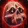
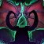
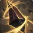

全职业 · 全专精
13 职业 40 专精，每个含天赋与装备属性。卡片下方六格为完成度 ——骨架 / 手法 / 对阵 / 天赋 / 装备 / 训练。
Warrior · 板甲
Paladin · 板甲
Hunter · 锁甲
兽王Beast MasteryB
 射击MarksmanshipA
生存SurvivalA
射击MarksmanshipA
生存SurvivalA
Rogue · 皮甲
Priest · 布甲
Death Knight · 板甲

鲜血Blood坦克 冰霜FrostC 邪恶UnholySShaman · 锁甲
元素ElementalA
 增强EnhancementA+
增强EnhancementA+
 恢复Restoration治疗
恢复Restoration治疗
Mage · 布甲
Warlock · 布甲
痛苦AfflictionA
 恶魔学识DemonologyC
恶魔学识DemonologyC
 毁灭DestructionA
毁灭DestructionA
Monk · 皮甲
Druid · 皮甲
平衡BalanceA+
 野性FeralA
守护Guardian坦克
恢复Restoration治疗
野性FeralA
守护Guardian坦克
恢复Restoration治疗
Demon Hunter · 皮甲

浩劫HavocA 复仇Vengeance坦克 DevourerDevourerBEvoker · 锁甲
湮灭DevastationA+
恩护Preservation治疗

增辉AugmentationC梯队（S / A+ / A / B / C）取自 Icy Veins 12.0.7 PvP DPS 梯队表；治疗与坦克该表未收录，标注为角色。